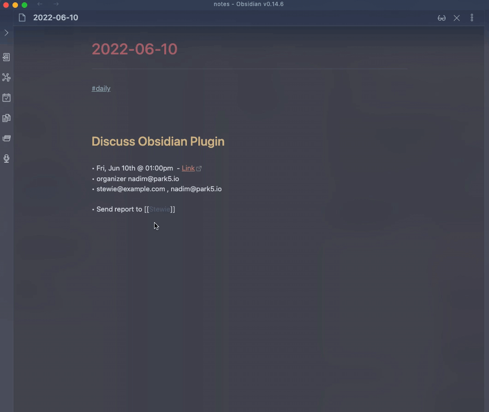
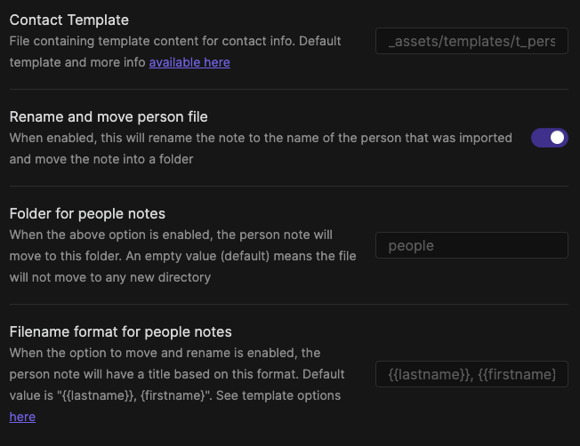

People Info

Command Input
The input is a string search against Google Contacts. Anything that Google Contacts accepts as a query parameter will be supported. First/Last names, emails...etc
When nothing has been input yet, the following criteria will be applied as default (in order):
- if some text is selected use that as a default query
- use the filename as a default query
Contact Insertion Mode
You can choose how contact information is inserted into your notes. This setting is found in Settings under Contact insertion mode.
Inline content (default)
When you select a contact, the full content from your person template will be inserted at the cursor position in the current note.
Create file and insert link
When this mode is selected, the plugin will:
- create a new note for the contact in the directory specified in
Folder for people notessetting - the note is populated with content from your person template
- a wiki link (ex:
[[Stewie Griffin]]) is inserted at the cursor position instead of the full content
If a note for that contact already exists, the plugin will not modify it and will only insert the link. This means you can safely make manual edits to contact notes without worrying about them being overwritten.
This mode is useful if you want to:
- build a knowledge base of contacts in a dedicated directory
- insert references to contacts in your daily notes or other notes
- preserve any manual edits you make to contact notes
- avoid errors when inserting the same contact multiple times
When using
Create file and insert linkmode, make sure you have specified a directory in theFolder for people notessetting. If that directory doesn't exist, it will be created automatically.
Move/Rename
This setting only applies when using
Inline contentmode. When usingCreate file and insert linkmode, notes are created directly in theFolder for people notesdirectory with the appropriate filename.
If the option to move/rename the note is enabled (default is enabled), after the content from the person template is inserted:
- the note will be renamed according to the
filename formatoption. the default here is{{lastname}}, {{firstname}}. Any field in the template fields listed below can be used - the note will be moved to the directory specified in Settings. By default, this is blank which means the file would be renamed but will not be moved to any other directory
If the first option below
Rename and move person fileis not enabled, the other two settings have no effect.When specifying your own filename format, make sure you pick something that continues to be unique across several contacts. i.e. picking
{{firstname}}is valid, but obviously will not work out well if you have two contacts with the same first name.If you specify a directory to move the contact file to, make sure that directory exists!

Template
How the template is used depends on your Contact insertion mode setting:
- Inline content mode: The template content is inserted directly at the cursor position in the current note
- Create file and insert link mode: The template is used to populate newly created contact notes in the
Folder for people notesdirectory. If a note already exists for that contact, the template is not applied (preserving any manual edits you've made).
Default Template
---
aliases: ["{{lastfirst}}", "{{firstlast}}", "{{firstname}}.{{lastname}}", {{emails}}]
created: ["{{date}} {{time}}"]
---
# {{firstname}} {{lastname}}
#person #person/{{source}}
{{org.title}} {{org.department}}
----
## Contact Info
Email: {{emails}}
Phone: {{phones}}
[open in Google Contacts]({{link}})
{{primaryPhoto}}
----
## Log
### [[{{date}}]] {{time}} - Created
The default template is designed to create a complete note for a contact. This works well with Create file and insert link mode, and can also be used with Inline content mode if you want to insert full contact information into a note. You can customize the template to match your workflow.
Template Fields
Fields are variables enclosed in {{ }} and will be replaced when the content is generated.
| Field | Description |
|---|---|
| firstName | |
| lastName | |
| middleName | |
| firstLast | "Firstname Lastname" ex: Stewie Griffin |
| lastFirst | "Lastname, First" ex: Griffin, Stewie |
| nicknames | Nicknames, joined by , |
| contactGroups | contact groups from Google (ex: myContacts, Starred), joined by , |
| emails | Email(s), joined by , |
| phones | Phone number(s), joined by , |
| addresses | Address(es). The different fields in the address are joined by , and each address will be on a new line. |
| birthdays | birthday(s) stored for the contact in year-month-day format, joined by , |
| org.title | Title of contact in company directory (if applicable) |
| org.department | Person's department in company directory (if applicable) |
| org.name | Name of the organization/company (if applicable) |
| type | Passed along from Google API. Possible values here. Useful to differentiate a contact vs. someone obtained from company directory |
| source | will return the google account from where this event was fetched |
| urls | urls for that contact; includes things like homepage. will be returned as a comma separated string of type: value. For example, homepage: https://www.obsidian.md |
| relations | relations for the contact. will be returned as a comma separated string of type: person. For example, spouse: Jack |
| clientData | client key/value pairs. will be returned as a comma separated string of key: value. |
| userData | user defined key/value pairs. will be returned similar to clientData |
| bio | the contact's bio; in Google Contacts, that field is called Notes |
| link | will return the url, if available, to open the contact on Google Contacts |
| photos | profile photos for that contact. will be returned as a space separated markdown image links. For example,   |
| primaryPhoto | primary (based on Google sources) profile photo for that contact. will be returned as markdown image link. For example,  |
| json | returns the entire contact object as JSON. this is useful when used with other templating plugins. see example below. |
Customizing Template
You can create your own template in a file, and include a link to that file in Settings for Event Template. For example, you can create a note in _assets/templates/ called t_event and then provide the path _assets/templates/t_event in Settings
Using Templater
You can use the json field to get more flexibility with how the info is rendered in your template. This would typically be done with another templates plugin, such as Templater.
<%*
let json = {{json}}
let firstName = json.firstName
let emails = json.emails.join("\n")
let relations = json.relations.map(({person, type}) => `${firstName} is a ${type || ''} relation to ${person}`).join("\n")
-%>
my contact's first name is <% firstName %>
emails:
<% emails %>
relations:
<% relations %>
date: <% tp.file.creation_date("YYYY-MM-DD HH:mm:ss") %>
<% tp.file.cursor() %>
The first line brings in the entire object into the json variable. From there, you can construct any template for each individual field. When the above Templater snippet is run, it would output something similar to this:
my contact's first name is Stewie
emails:
stewie.griffin@baby.example.com
stewie@baby.genius.example.com
relations:
Stewie is a child relation to Lois
Stewie is a brother relation to Brian
date: 2022-10-26 14:57:22